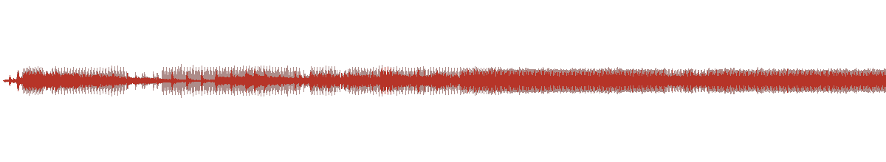
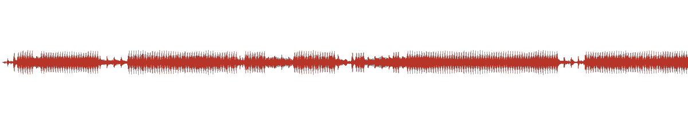
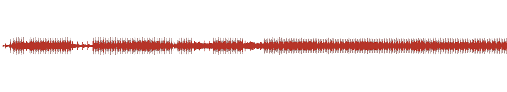

COMMONS 公地 · 声音对照包 · 评审材料
先听，再看：结构如何变成声音
三段 30 秒左右的音频，全部由页面里的 AudioEngine 离线渲染，不是另外合成的配乐。建议戴耳机；先听左右差异，再对照波形与页面里的行为指纹。
01
同一颗种子，两个环境
30s左耳 · 随机汤 / 右耳 · 滑翔群；同一 genome、同一 seed=42，只有环境不同。

sound/01-binaural-same-seed.wav · .mp3
02
突变前后
29.5s前 15 秒 Conway，后 15 秒 HighLife；同一环境、同一 seed，听密度、音色与节奏的变化。

sound/02-mutation-before-after.wav · .mp3
03
指标到声音
30s完整混音：密度→音量、熵→音色亮度、活跃度→节奏、周期性→节拍规律。

sound/03-mapping-and-events.wav · .mp3
How to listen · 听什么
01 双耳：左耳与右耳是同一颗种子、同一套基因，只有环境不同。不要找“哪边更好听”，听两边的事件密度、音色和节奏是否不同。
02 突变：0–15 秒 Conway，15–29.5 秒 HighLife；同一环境、同一 seed，规则变了，声音跟着变。
03 映射：密度推音量，熵推音色亮度，活跃度推节奏；结构事件触发短音，不是循环鼓点。
Mapping · 映射
密度 → 音量
熵 → 音色亮度
活跃度 → 节奏
周期性 → 节拍规律
诚实边界：声音是观测通道，不是科学声化标准；它把结构变化转成可听事件，便于比较，不宣称可听出真实生物参数。
文件：每段含 WAV（保真）与 MP3（分享）；03 也用于演示视频的环境音轨。
Render · 怎么重渲染
node tools/audio-pack.cjs http://127.0.0.1:4200
页面里的 AudioEngine 通过 OfflineAudioContext 离线渲染，44100 Hz 双声道；每段先写 WAV，再用 loudnorm=I=-16:TP=-1.5:LRA=11 统一响度，最后编码 MP3 192 kbps。波形图只作视觉索引，判断以听感为准。
核对：01 左/右声道相关系数约 0.20；02 在 15 秒处规则切换；03 与演示视频环境音轨同源。时长与峰值见 sound/render-meta.json。